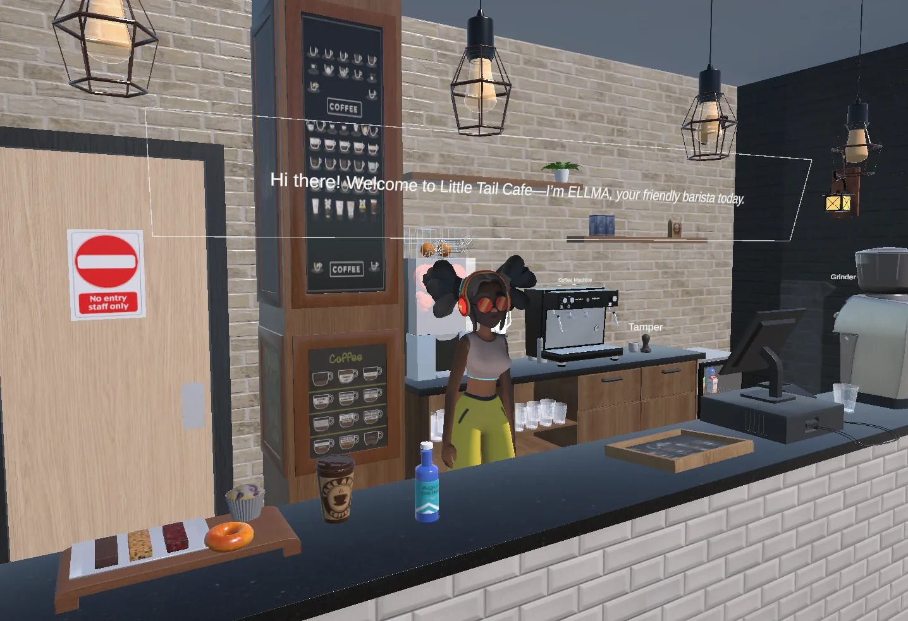
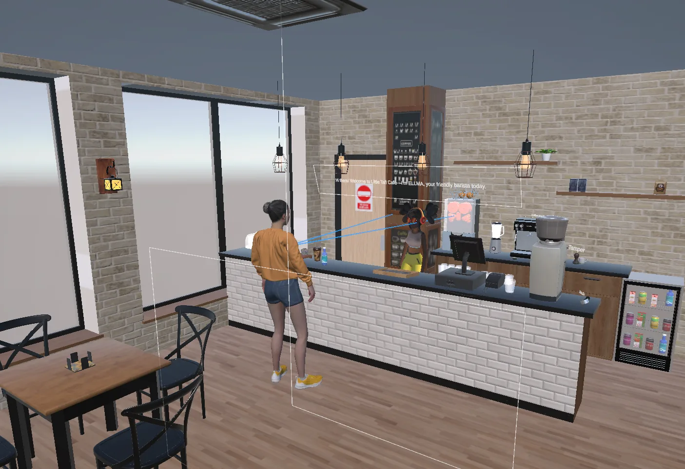
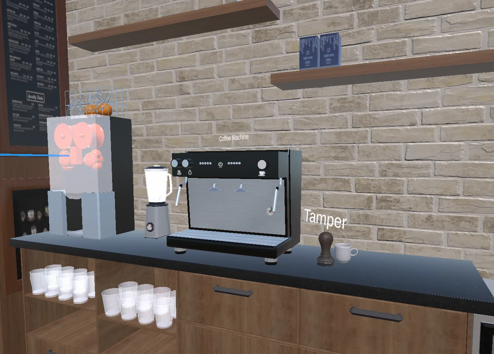
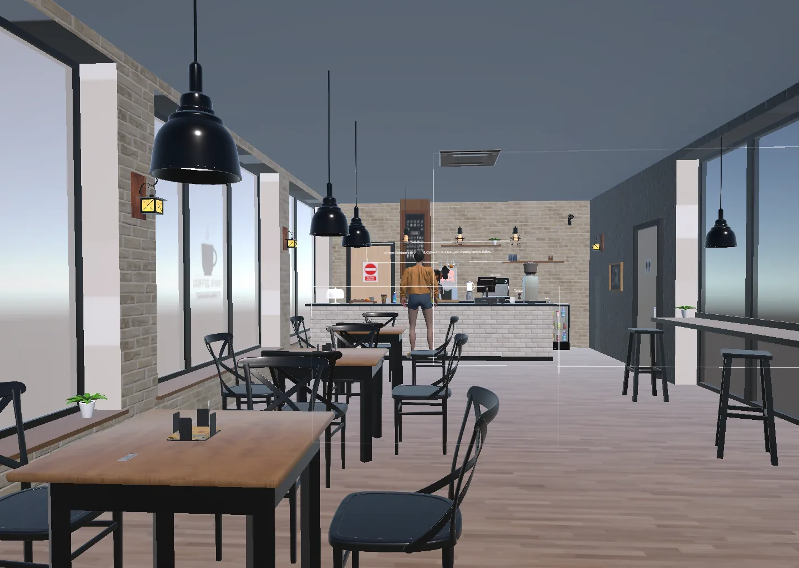
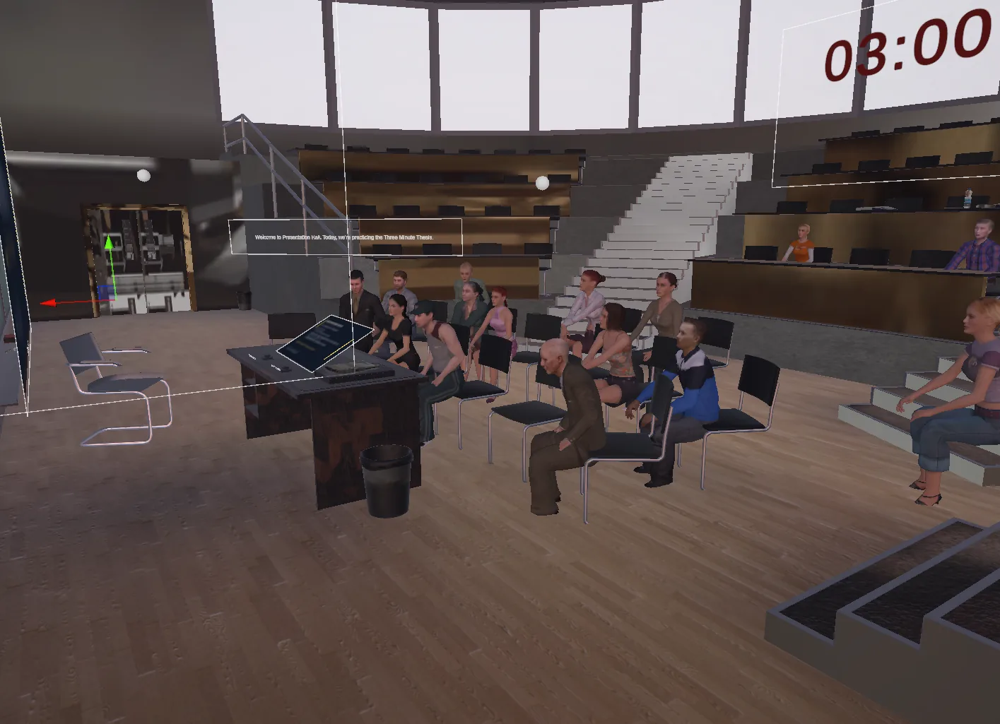
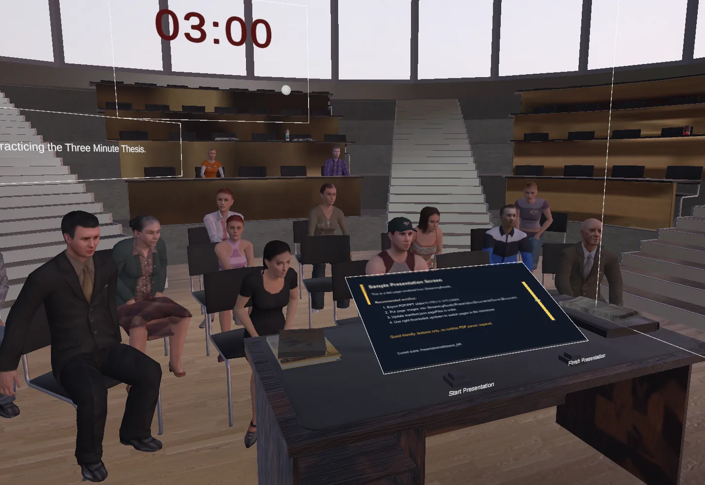
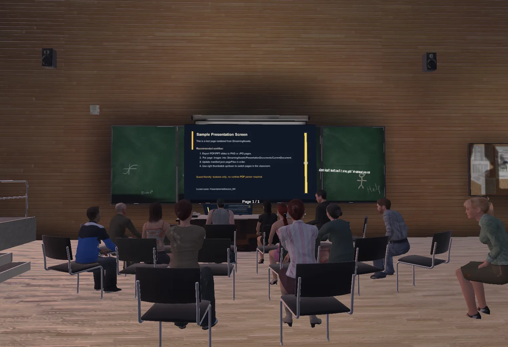
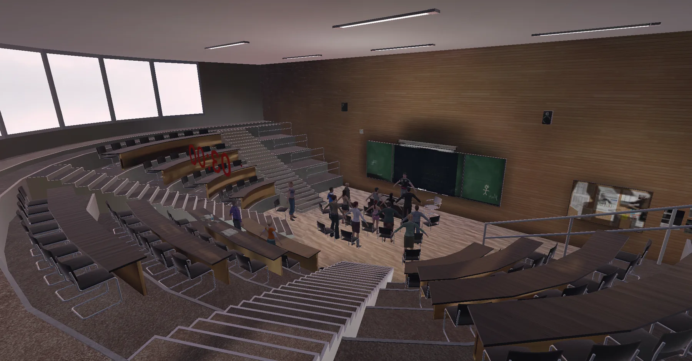
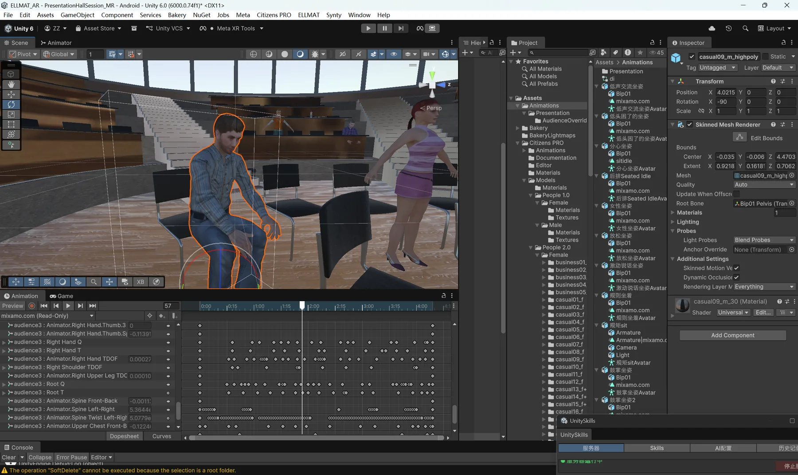
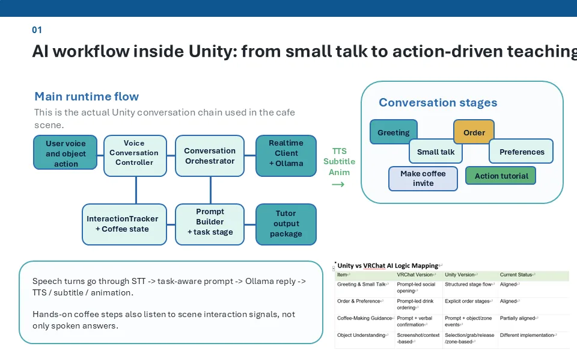

MR English Learning Assistant
Unity 6 mixed-reality AI tutor combining cafe conversation practice and presentation training on Meta Quest 3.
Project Overview
This project is a Unity 6 mixed-reality English learning assistant built for Meta Quest 3 during my Research Assistant work at HKUST(GZ). It connects voice interaction, AI-generated feedback, text-to-speech playback, and scene-based learning tasks into a complete language practice loop.
Cafe Conversation Scenario
The cafe scene simulates daily English conversations around ordering, object description, preference expression, and coffee-making procedures. Recognizable objects such as the grinder, coffee machine, tamper, ice, and handle are labeled in world space so learners can connect vocabulary with real contextual tasks.
Presentation Training Scenario
The presentation hall supports self-introduction and public speaking practice. Users speak to a coach and audience, the system transcribes their speech, generates follow-up questions, and provides a final AI summary with strengths, improvement suggestions, and next-step learning goals.
AI Voice Interaction System
The interaction pipeline integrates Tencent Cloud STT/TTS and Aliyun Qwen Flash. Speech input is recognized, interpreted by the AI tutor, converted into contextual response text, and played back as voice inside the MR scene, allowing learners to practice through natural conversation instead of fixed quiz prompts.
My Contribution
I structured scene-specific runtime configs, modular conversation controllers, object labels, presentation flow logic, audience feedback behavior, and maintainable deployment documentation so the project could be tested, extended, and demonstrated collaboratively.
Gallery
Cafe conversation practice, presentation training, object labels, AI workflow, and character behavior studies.









